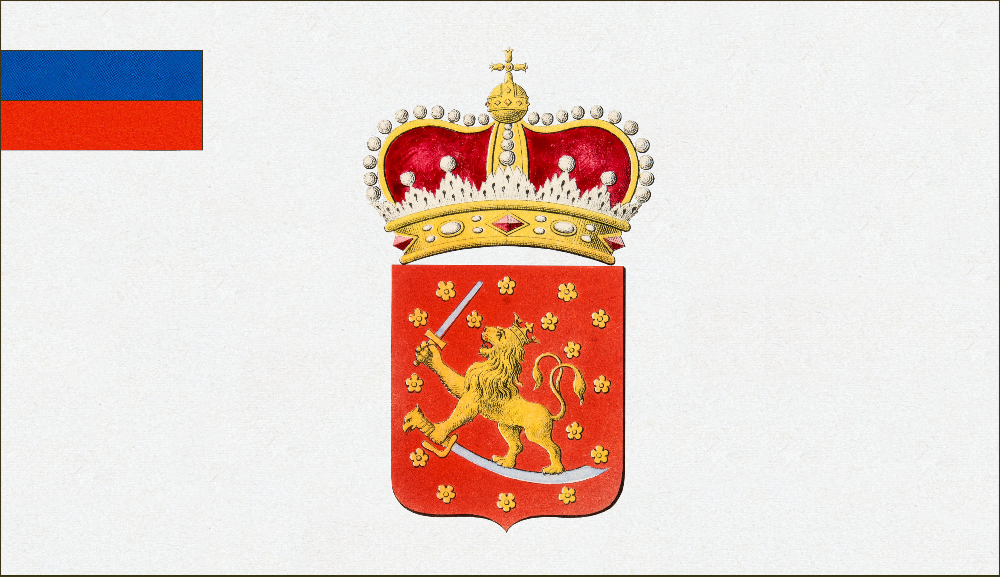

Suomen lipun vaiheet
Ensimmäinen suuri lippukeskustelu 1862-63
Sortokausien liput
Itsenäisyyden jälkeinen lippukeskustelu 1917-1920
Kirjallisuutta

 Ensimmäinen suuri lippukeskustelu 1862-63
Ensimmäinen suuri lippukeskustelu 1862-63
Ensimmäinen suuri lippukeskustelu 1862-63
Ensimmäinen suuri lippukeskustelu 1862-63